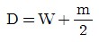
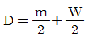
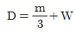
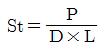
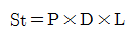
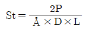
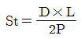
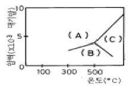

화약취급기능사 (2005-01-30 기출문제)
1과목: 화약 및 발파
1. 다음 사항은 라인드릴링(line-drilling)법에 대한 특징이다. 내용이 틀린 것은?
- 이 방법은 발파에 의하여 파단면을 만드는 것이 아니고 착암기로 파단면을 만드는 것이다.
- 벽면 암반의 파손이 적으나 많은 천공이 필요하므로 천공비가 많이 든다.
- 천공은 수직으로 같은 간격으로 하여야 하므로 천공 기술이 필요하다.
- 층리, 절리 등을 지닌 이방성이 심한 암반구조에 가장 효과적으로 적용되는 방법이다.
(정답률: 60%)

2. 조절발파의 장점이다. 다음 중 거리가 먼 것은?
- 여굴이 많이 발생하여 차기 발파가 용이하다.
- 발파면이 고르게 된다.
- 암반의 표면을 강하게 하여 보강의 필요성을 줄인다.
- 발파예정선에 일치하는 발파면을 얻을 수 있다.
(정답률: 알수없음)
3. 폭발 생성 가스가 단열팽창을 할 때에 외부에 대해서 하는 일의 효과를 말하는 것은?
- 동적효과
- 정적효과
- 충격열효과
- 파열효과
(정답률: 알수없음)
4. 단순사면(유한사면)의 파괴형태가 아닌 것은?
- 사면 선단파괴
- 사면내 파괴
- 사면 저부파괴
- 사면외 파괴
(정답률: 알수없음)
5. 디메틸아닐린을 진한 황산에 녹인 다음, 여기에 혼합산(질산과 황산)을 넣고 니트로화하면 생성되는 것은?
- 테트릴
- 헥소겐
- 펜트리트
- 피크린산
(정답률: 알수없음)
6. 암석 1m3를 발파할 때 필요로 하는 폭약량의 뜻을 가지는 것은?
- 발파계수
- 폭약계수
- 암석계수
- 전색계수
(정답률: 알수없음)
7. 비전기식 뇌관의 특징이 잘못된 것은?
- 튜브의 연결작업이 빠르다.
- 정전기, 미주전류에 안전하다.
- 내수성이 좋고 시차 조절이 용이하다.
- 저항값 및 불발뇌관 확인이 쉽다.
(정답률: 알수없음)
8. 2자유면 이상의 발파에 있어서 최소저항선과 공심(천공장) 관계가 옳은 것은?(단, D : 공심, W : 최소저항선, m : 장약장)
- D = m + W



(정답률: 알수없음)
9. 전기뇌관을 사용한 병렬식 결선방법의 장점과 거리가 먼것은?
- 불발조사가 용이하다.
- 전원으로 동력선, 전등선의 이용이 가능하다.
- 전기뇌관의 저항이 조금씩 달라도 상관없다.
- 대형발파에 이용된다.
(정답률: 알수없음)
10. 다음 중 발파작업의 3요소가 아닌 것은?
- 착암
- 대피
- 발파
- 쇄석운반
(정답률: 알수없음)
11. 다음 화약류 중 전폭약은 어느 것인가?
- 무연화약, 흑색화약
- 테트릴, RDX
- 다이너마이트, ANFO 폭약
- 풀민산수은(II), 아지화납
(정답률: 91%)
12. 조성에 의한 화약류의 분류 중 혼합화약류에 속하는 것은?
- 흑색화약
- 니트로글리세린
- 피크린산
- 헥소겐
(정답률: 알수없음)
13. 다음의 설명 중 옳은 것은?
- 소성지수는 소성한계에서 액성한계를 뺀 값이다.
- 액성한계란 반고체상태에서 고체상태로 넘어가는 경계의 함수비이다.
- 수축한계란 액체상태에서 소성상태로 넘어가는 경계의 함수비이다.
- 소성한계란 소성상태에서 반고체상태로 넘어가는 경계의 함수비를 말한다.
(정답률: 알수없음)
14. 공업뇌관용 뇌홍폭분 제조 시 풀민산 수은(Ⅱ) (Hg(ONC)2)과 염소산칼륨(KClO3)의 배합비율은?
- 94 : 6
- 80 : 20
- 20 : 80
- 6 : 94
(정답률: 알수없음)
15. 다음 폭약 중 폭발속도가 가장 빠른 것은?
- T.N.T
- 피크르산
- 헥소겐
- 니트로나프탈렌
(정답률: 100%)
16. 누두지수 n=1.5일 때 누두지수의 함수 f(n)값을 덤브럼(Damburm)식으로 구하면 그 값은 얼마인가?
- 2.0
- 2.5
- 2.7
- 3.0
(정답률: 알수없음)
17. 발파계원은 발파 위험구역안의 통행을 막기 위해서 경계원을 배치하고 경계원에게 확인시켜야 할 사항이 있다. 적당하지 않은 것은?
- 발파방법
- 경계하는 위치
- 경계하는 구역
- 발파완료 후의 연락방법
(정답률: 알수없음)
18. 니트로글리세린의 동결 온도는?
- -1℃
- 0℃
- 8℃
- 14℃
(정답률: 알수없음)
19. 다음의 항목 중 집중 발파의 목적에 해당하는 것은 어느것인가?
- 최소 저항선의 증대
- 발파공경의 증대
- 신자유면의 증대
- 장약 길이의 증대
(정답률: 알수없음)
20. 암석의 간접인장시험법(Brazilian test)에 의하여 인장강도 측정시 알맞는 식은? (단, St : 인장강도, P : 최대하중, D : 시험편의 지름, L : 시험편의 길이)




(정답률: 알수없음)
2과목: 화약류 안전관리 관계 법규
21. 사상 순폭 시험에서 약경 32mm인 다이너마이트의 최대 순폭 거리가 160mm이었다면 순폭도는 얼마인가?
- 0.2
- 5
- 10
- 5120
(정답률: 알수없음)
22. 가연성 가스나 석탄 가루에 의한 폭발반응을 막기 위하여 폭약에 배합하여 주는 감열소염제는?
- 질산염
- 염소산염
- 염화나트륨
- 과염소산염
(정답률: 알수없음)
23. 발파에 의한 암반의 파괴 이론 중 인장파괴 효과를 나타내는 용어는?
- 홉킨슨효과(Hopkinson effect)
- Daw의 이론
- 취성파괴(Brittle fracture)
- 측벽효과(Channel effect)
(정답률: 알수없음)
24. 전기발파의 결선방법과 거리가 먼 것은?
- 직렬결선
- 직병렬결선
- 병렬결선
- 조합결선
(정답률: 알수없음)
25. 어떤 암체에 대한 천공 발파결과 100g의 장약량으로 1.5m3의 채석량을 얻었다면 300g의 장약량으로는 몇 m3의 채석이 가능한가?
- 3.4m3
- 3.8m3
- 4.0m3
- 4.5m3
(정답률: 알수없음)
26. 화약류 판매업자가 판매를 위하여 저장하는 경우 저장소외의 장소에 저장할 수 있는 화약류의 수량 중 맞지 않는 것은?
- 화약 10kg
- 폭약 5kg
- 도폭선 500m
- 도화선 1,000m
(정답률: 50%)
27. 화약류관리보안책임자가 이사를 하여 주소가 변경되었음에도 1년이 지나도록 관할 경찰서에 신고하지 않았을 경우에 받는 불이익은?
- 15일 면허정지 사유이다.
- 300만원 이하의 과태료를 부과 받는다.
- 면허취소 사유이다.
- 처벌은 없으나 제1차 경고의 사유이다.
(정답률: 90%)
28. 화약류 양수허가의 유효기간은?
- 6개월
- 1년
- 2년
- 3년
(정답률: 알수없음)
29. 초유폭약은 가연성 가스가 몇 % 이상이 되는 장소에서 발파하면 안되는가 ? (단, 법적 제한수치임)
- 0.3%
- 0.4%
- 0.5%
- 0.6%
(정답률: 알수없음)
30. 화약류 취급에 관한 사항 중 틀린 것은?
- 화약류를 취급하는 용기는 철재, 그밖의 전기가 잘통하는 견고한 구조로 할 것
- 화약·폭약과 화공품은 각각 다른 용기에 넣어 취급할 것
- 굳어진 다이나마이트는 손으로 직접 주물러서 부드럽게 할 것
- 낙뢰의 위험이 있을 시 전기뇌관작업을 하지 아니할 것
(정답률: 알수없음)
31. 화약류저장소의 간이흙둑 경사는?
- 45°이하
- 60°이하
- 75°이하
- 30°이하
(정답률: 알수없음)
32. 화약류를 실은 차량이 서로 주차하는 때에 앞차와 뒷차와의 거리는 ? (단, 법령상 최단 기준임)
- 200미터
- 150미터
- 100미터
- 50미터
(정답률: 알수없음)
33. 화약류 1급 저장소의 최대 저장량으로 틀린 것은?
- 총용뇌관 : 5000만개
- 전기도화선 : 무제한
- 공업뇌관 : 6000만개
- 화약 : 80톤
(정답률: 알수없음)
34. 폭약 1톤으로 환산된 수량으로서 잘못된 항목은?
- 화약 : 2톤
- 공업용뇌관 : 100만개
- 실탄 : 300만개
- 도폭선 : 50km
(정답률: 알수없음)
35. 화약류의 운반신고없이 운반할 수 있는 수량으로 옳지 않은 것은?
- 도폭선 - 1,500미터
- 미진동파쇄기 - 5,000개
- 장난감용꽃불류 - 500kg
- 실탄(1개당 장약량 0.5g 이하) - 15만개
(정답률: 알수없음)
36. 다음 중 심성암끼리 짝지어진 것은?
- 휘록암, 안산암, 반려암
- 화강암, 섬록암, 반려암
- 안산암, 현무암, 유문암
- 휘록암, 석영반암, 안산반암
(정답률: 알수없음)
37. 석회암이나 고회암은 압력과 열의 작용으로 방해석의 결정 집합체인 어떤 암석으로 변성되는가?
- 슬레이트
- 규암
- 천매암
- 대리암
(정답률: 알수없음)
38. 습곡이 아래로 향하여 구부러져 있는 것을 말하는 것은?
- 향사
- 배사
- 정부
- 윙
(정답률: 알수없음)
39. 마그마의 정출과정 중 가장 높은 온도에서 정출된 것은?
- 감람석
- 각섬석
- 흑운모
- 석영
(정답률: 알수없음)
40. 선캄브리아대의 암석은 우리나라 전면적의 얼마 정도를 차지하고 있는가?
- 약 20%
- 약 35%
- 약 50%
- 약 70%
(정답률: 알수없음)
3과목: 암석 및 지질
41. 화성암의 구조중 색을 달리하는 광물들이 층상으로 번갈아 나타나거나 석리의 차로 만들어지는 평행구조를 말하는 것은?
- 유문상구조
- 행인상구조
- 호상구조
- 구과상구조
(정답률: 알수없음)
42. 지각을 구성하고있는 8대 원소 중 가장 많은 것은?
- 수소(H)
- 산소(O)
- 알루미늄(Al)
- 철(Fe)
(정답률: 알수없음)
43. 다음에서 변성암의 조직과 관계 있는 것은?
- 분급작용에 의한 조직
- 쇄설성 조직
- 반상 변정질 조직
- 유리질 조직
(정답률: 알수없음)
44. 우리나라에서는 고생대 중엽에 1억년간 지층이 쌓이지 않아 이 부분이 부정합으로 되어 있다. 이 기는?
- 페름기
- 데본기
- 석탄기
- 실루리아기
(정답률: 알수없음)
45. 퇴적물이 쌓인 후 단단한 암석으로 되기까지 여러단계를 걸쳐 일어나는 작용을 말하는 것은?
- 속성작용
- 분급작용
- 변성작용
- 분화작용
(정답률: 알수없음)
46. 주성분 광물이 Ca-사장석과 휘석으로 되어있는 암석은?
- 감람암
- 현무암
- 석영반암
- 규장암
(정답률: 알수없음)
47. 다음 중 습곡구조 관찰이 가장 어려운 암석은?
- 화성암
- 퇴적암
- 변성암
- 편마암
(정답률: 알수없음)
48. 현수체(roof pendant)와 관련이 깊은 것은?
- 암주
- 병반
- 저반
- 암경
(정답률: 알수없음)
49. 화성암의 주성분 광물중 화강암에 대한 부피(%) 값으로 맞는 것은 ? (단, 대략적인 값임)
- 석영＜5%, 장석 60%, 흑운모 30%, 휘석＜5%
- 장석＜30%, 휘석 70%
- 석영 25%, 장석＜30%, 석기＞45%
- 석영 30%, 장석 60%, 흑운모 10%
(정답률: 알수없음)
50. 화성암의 분류와 명명에 직접 관계없는 요소는?
- 석영의 함유량
- 장석의 종류와 함유량
- 수분의 함유량
- 유색, 무색 광물의 함유량
(정답률: 85%)
51. 변성암에 바늘모양의 광물이나 주상의 광물이 한 방향으로 평행하게 배열되어 나타내는 구조를 뜻하는 것은?
- 엽리구조
- 편리구조
- 편마구조
- 선구조
(정답률: 알수없음)
52. 어떤 암석이 변성작용을 받으면 천매암이 된다. 그 원암은 다음 중 어느 것인가?
- 규암
- 사문암
- 석회암
- 응회암
(정답률: 알수없음)
53. 현무암 다음으로 흔한 화산암은?
- 안산암
- 조면암
- 유문암
- 석영조면암
(정답률: 알수없음)
54. 퇴적물의 퇴적시 아래로는 굵은 알갱이가 쌓이고 위로는 점차 작은 알갱이들이 쌓이는 구조는?
- 연흔
- 사층리
- 점이층리
- 건열
(정답률: 알수없음)
55. 다음 중 중생대에 속하지 않는 것은?
- 백악기
- 쥐라기
- 트라이아스기
- 석탄기
(정답률: 73%)
56. 암석을 분류하는 기준 중 가장 중요한 사항은?
- 구성광물과 조직
- 광물알갱이의 크기
- 광물의 배열
- 암석의 색
(정답률: 알수없음)
57. 아래 그림은 Al2SiO5의 동질이상의 관계를 갖는 변성광물의 화학적 평형관계를 나타낸 것이다. A, B, C에 해당되는 변성광물이 맞는 것은?

- A-홍주석, B-규선석, C-남정석
- A-규선석, B-남정석, C-홍주석
- A-규선석, B-홍주석, C-남정석
- A-남정석, B-홍주석, C-규선석
(정답률: 알수없음)
58. 쇄설물과 그에 해당되는 쇄설성 퇴적암의 연결이 옳지 못한 것은?
- 자갈 - 역암
- 모래 - 사암
- 점토 - 셰일
- 실트 - 석회암
(정답률: 알수없음)
59. 퇴적암에서 규조토는 어떤 퇴적물인가?
- 쇄설성 퇴적물
- 화학적 퇴적물
- 유기적 퇴적물
- 구조적 퇴적물
(정답률: 알수없음)
60. 암석이 압력이나 장력을 받아서 생기는 것으로 암석에서 관찰되는 쪼개진 틈을 무엇이라 하는가?
- 습곡
- 단층
- 정합
- 절리
(정답률: 알수없음)
라인드릴링은 착암기를 사용하여 파단면을 만드는 방법으로, 발파에 의해 파단면을 만드는 것이 아니다. 또한 천공은 수직으로 같은 간격으로 하여야 하므로 천공 기술이 필요하다는 것은 맞지만, 이는 특징이 아니라 필요한 조건이다.
층리, 절리 등을 지닌 이방성이 심한 암반구조에 가장 효과적으로 적용되는 방법이라는 것은 맞는 설명이다. 이 방법은 이러한 암반구조에서도 안정적인 파단면을 만들 수 있기 때문이다.